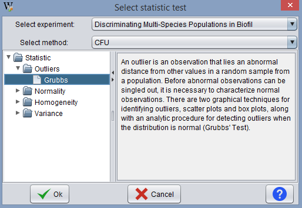
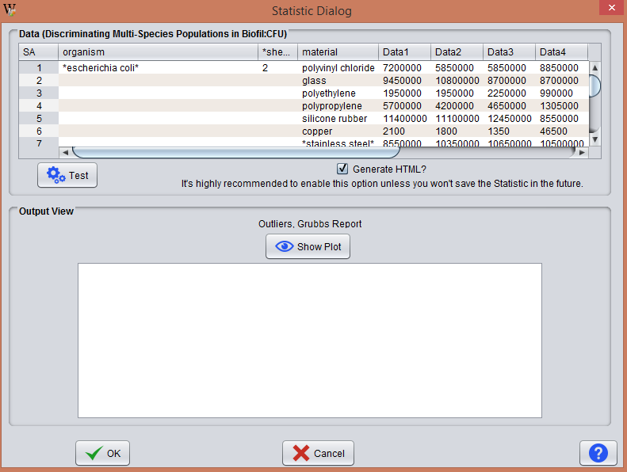
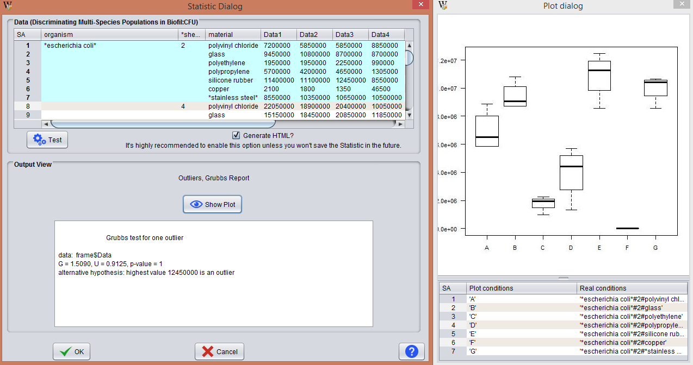

This operation requires that the experiment has associated at least one data table.

The program shows the different experiments in the clipboard and the associated methods of analysis, and the statistical tests available. The user should decide which tests are the most appropiate to conduct the desired analysis.
In BEW, there are 4 large groups of tests:
After selecting the desire analysis test, the program opens a new window, showing the data associated with the experiment and method selected. The user may choose to apply the test to all the data or only a subset.

As shown in the above figure, the window is divided into 2 areas.
The panel enabling data selection.
The panel outputting test's results, including any derived plot.
Keep in mind that if the volume of data is large, the plot may become hard to read. In these cases, it is recommended divide the data in several tests.

NOTE: If for any reason, the program throws an error when performing calculations, it is recommended to accomplish the update packages from R operation (see section update R packages).